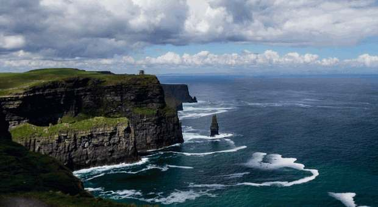
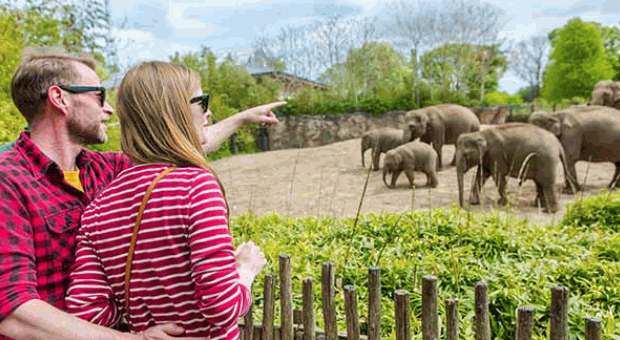
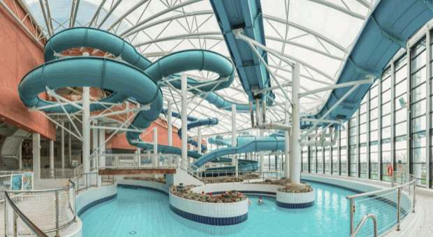

Guinness Storehouse, Dublin

Discover the history of Guinness at the Guinness Storehouse. Explore exhibitions about brewing before enjoying panoramic views of Dublin from the Gravity Bar.
Annual Number of Visitors: 1,711,281
Cliffs of Moher, Co. Clare

Visit the Cliffs of Moher on Ireland's Atlantic coast. Enjoy spectacular ocean scenery and watch seabirds along the cliffs.
Annual Number of Visitors: 1,527,000
Dublin Zoo

Explore Dublin Zoo in Phoenix Park. Discover animals from around the world and learn about wildlife conservation during a family day out.
Annual Number of Visitors: 1,264,300
National Aquatic Centre, Dublin

The National Aquatic Centre in Blanchardstown offers swimming facilities and water-based activities for visitors of different ages.
Annual Number of Visitors: 1,099,756
Book of Kells Exhibition, Trinity College, Dublin
Discover the Book of Kells Exhibition at Trinity College Dublin. Learn about the famous illustrated manuscript and the college's historic library.
Annual Number of Visitors: 983,410